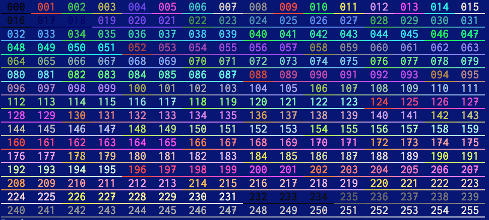

林檎 さんについての備忘録
colordiff でも diff の出力を色づけできるよ
「ファイルの差分の表示に好きな色をつけて見やすくしたいな〜」ということで、git diff で diff-highlight を使ってみたり docdiff を使ってみたりしてきたが、colordiff というものもあることを知った (検索すると、日本語のページがいくつも見つかる)。 結論から言うと、私の場合は git diff と docdiff を適宜使い分けていれば十分で、あまり colordiff の出番はなさそうな気もする。 しかし、導入が楽なところは素晴らしいので、記録しておく。
インストールは、$ brew install colordiff とするだけ。
使用例は、$ diff file_a.txt file_b.txt | colordiff など。
気軽に導入できる。
色の設定はカスタマイズできる。~/.colordiffrc というファイルに指定しておけばよい。
サンプルが /usr/local/etc/colordiffrc にあるので、適宜コピーすればよい。
なお、色の指定には、ANSI エスケープコードで使われる 256 色の番号 (0〜255) も使える。 これらの色を試しに表示するスクリプトを以前作ったので、その実行結果を以下に示しておく。 これを見ながら好きな色の番号を選べばよい。

とりあえず、~/.colordiffrc には以下のように設定してみた。
banner=no
color_patches=no
plain=off
newtext=202
oldtext=33
diffstuff=52
cvsstuff=58